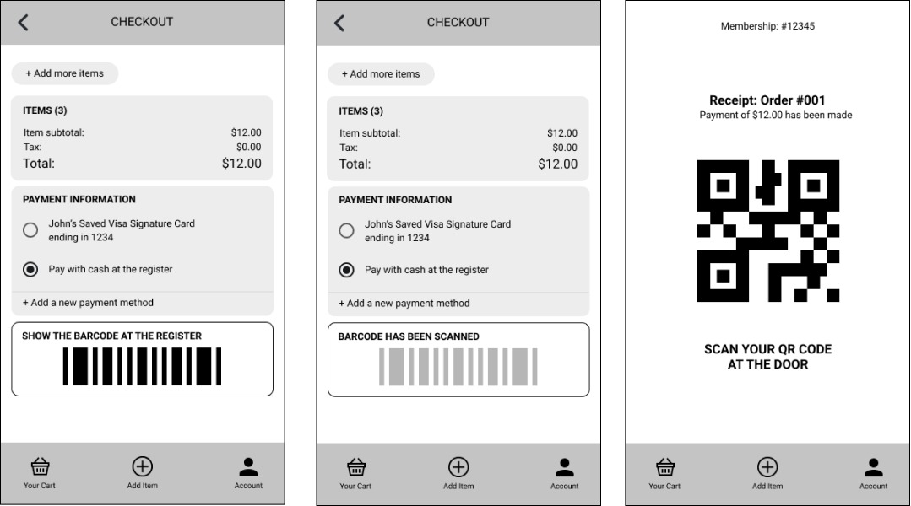

Costco Responsive Web App
Interaction Design Studio I
Nov - Dec. 2020

Team
Monica Chang, Emily Feng, April Wu & Ginny Zhao
Focus
Discover the interactional challenges that arise when creating responsive platforms and strategize how technology can use design to overcome these obstacles.
Tools
Figma, Jamboard
Strategies
User research and UI/UX design
Overview
Grocery shopping is no longer the mundane chore; it’s a reason to leave the house
and feel "normal". However, given the widespread of the COVID-19, people shop taking extreme safety
precautions while carrying doubt in other shoppers’ ability to do the same.
This doubt coupled with invisible rules, such as checking out quickly to prevent the hold up of lines,
causes anxiety in shoppers. A key subset of the individuals described are Costco
visitors, who are often concerned by the wholesale market’s large number of visitors.
Research
Pop-up Research:
As a team, we used the pop-up research method to better understand the issues pertaining to grocery shopping during the current pandemic. We compiled a set of questions to ask our interviewees, but these questions mainly served as guides for them to tell their journey rather than the standard question-and-answer interview.
Questions:
- Can you walk me through the last time you purchased groceries? Why did you go?
- What did you (not) enjoy about your experience?
- Have you ever shopped online/in-person? Can you walk me through that experience?
- Tell me about a time when your shopping trip was extremely successful? Why?
- Tell me about a time when your shopping trip was not successful? What could have made your experience better?
Affinity Diagram and Journey Map
From the interviews, we collected a number of insightful answers and consolidated them through an affinity diagram to extract the main points and concerns.
Additionally, the interview provided details about the interviewees' general shopping structure, which allowed us to understand the structure of an average Costco shopper.
Consolidated Insights
- are generally not comfortable about leaving the house, but in-person grocery shopping gives them a sense of normality
- make decisions based on how to minimize the contact they have with others
- feel a heightened social pressure when checking out, afraid that they will hold up lines
- have a better experience when they know what to expect during the check out process
During the pandemic, people...
Design Proposal
We ideated a web app that allows customers to first scan their items, showing the
item's price and the updated total, before putting them into their cart. It will also
allow customers to edit/remove items in their cart and app accordingly.
This design can alleviate the social pressure during the checkout process as the shoppers
can see the details about and make necessary adjustments to their carts before they reach the cash register.
To make this program inclusive and accessible for the middle-aged and elderly shoppers, we designed
this web app to be responsive and adaptable on tablets, a larger screen, as well.
User Journey
Personas

"Paper" Prototyping
Created "paper" prototypes to visualize our proposed design and app flow
- Users can see the items that are currently in their cart
- Users can swipe down to access the scanning feature, which will add products into their shopping carts upon scanning the item's barcode
- Users can select their preferred payment method: pay with card and simply verify their payment at the exit or pay at the register with cash (which is followed by a secondary verification before exiting)
Think aloud Testing
Takeaways from the think-aloud testing:
- Check-out page was confusing: the two methods of payment both had the ‘confirm payment’ option with similar resulting pages, but the pages actually have different intentions for the user
- Physical inconvenice: the physical weight of tablets can cause tablet users to struggle with scanning barcodes
Post-crit Changes
Old version:
New version:
Changes:
- Check-out page was confusing: the two methods of payment both had the ‘confirm payment’ option with similar resulting pages, but the pages actually had different intentions for the user
- Physical inconvenice: the physical weight of tablets can cause tablet users to struggle with scanning barcodes
Mid-fi Prototype: scan product
Tablet Version:
Mobile Version:
Mid-fi Prototype: checkout
Tablet Version:
Mobile Version:

Comments:
- The split-screen view allows the user to add items on the left and see the items in their cart on the right
- With the larger real estate of tablets, the split-screen structure would be convenient for the users and allow them shop more consciously (i.e. visually show when they are approaching or exceeding their budget)
- The design pattern also mimics the self-checkout machines that currently exist.
Post-crit Changes
Changes:
- Swipe left/right to switch payment methods
- Minimize confusion with a title above barcode ("ALL ITEMS IN CART") to clarify its purpose
- Selecting the corresponding buttons to change payment methods
High-fi Prototype
Tablet Version:
Comments:
- We found that Costco carries a ton of variations for similar items, so having a fully collapsible cart would be a better utilization of the full tablet screen.
- For users who enjoy browsing and getting a preview of the available options, this design offers them a quick and easy solution to view a larger selection.
Mobile Version:
Comments:
- This current design confused the user as he thought swiping through would change to another card instead of changing payment method.
- We decided to converge our phone design to our tablet version where we have two icons indicating what option to choose.
- To make the flow more complete, we also decided to present customers to view their entire receipt before paying as we believe that this is a way of mitigating error prevention.

Mobile Version:
Stakeholder values & User Flow
Stakeholder Value:
Final User Flow:

Next Steps
If this project were to be continued, we would definitely plan for more user testings with actual Costco customers and recruit
different ages of users. Additionally, we would aim to make the tested prototypes more interactive to better understand how
clear and effective our designs are.
To supplement the feedback and results from the user testings, we would also like to launch surveys to see what current customers
envision to be their ideal shopping experiences and understand how our solution can help enhance their customer journey at Costco.